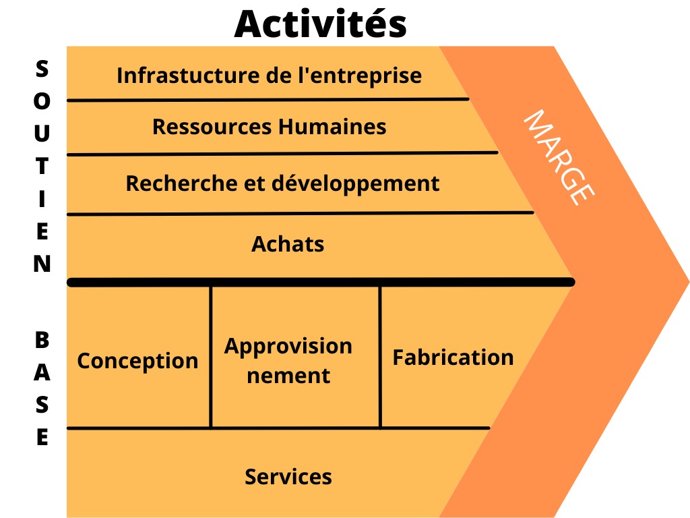

Naïo Technologies est une startup de la région toulousaine spécialisée en robotique agricole créée en 2011 par les ingénieurs Aymeric Barthès et Gaëtan Séverac et déclarée comme Société par actions simplifiée.
C’est en fabriquant des robots à destination des agriculteurs, qu’elle aborde le domaine des nouvelles technologies. L’entreprise s’installe alors à Toulouse et fait appel à FabLab afin d’y faire construire son premier robot.
Son éveil est possible grâce aux actionnaires agriculteurs qui croient au projet. C’est ainsi qu’elle commence par l'entretien des plantations de salades puis se diversifie.
Aujourd’hui elle organise des concours avec des écoles d’ingénieurs afin d'améliorer ses produits.
L’entreprise est une SAS (Société par actions simplifiée) elle se repose donc sur ses actionnaires qui, eux, disposent d’une plus grande liberté. Elle suit le modèle de l’innovation permanente, puisqu’elle se concentre sur ses robots et leur conception et externalise leur fabrication (FabLab). Il s’agit d’une startup autrement dit, la société à beaucoup investi durant les premières années suivant sa création. Aujourd'hui la société semble être auto-suffisante et a réalisé un chiffre d'affaires de 1.5M € en 2017.
L’entreprise achète des pièces, conçoit, construit et vend des robots agricoles automatisés.

L’entreprise n’a pas de concurrent dans le domaine de la robotique agricole automatisée en plein air. Plusieurs start-up s’y sont essayées mais sans succès.
Néanmoins, face à la croissance de la population mondiale et au manque de ressources qu’elle cause, de nombreuses méthodes d’agriculture modernes alternatives existent.
On observe dans de nombreux pays développés que des méthodes plus efficaces et productives se développent ; la plus populaire étant l’agriculture hors sol à lumière artificielle (agriculture urbaine).
L’entreprise rencontre un succès grâce à l’enjeu écologique qu'elle entretient : ses robots sont solaires et permettent de cultiver des fruits et légumes biologiques.
Son aspect d’automatisation permet aux agriculteurs d’avoir une meilleure efficacité et d’utiliser leurs sols à meilleur escient. La production croît et peut ainsi nourrir plus de personnes.
Néanmoins, à travers le monde, on rencontre de plus en plus de méthodes d’automatisation et de gestion de plantations, comme à Singapour, pays connu pour son développement et ses avancées technologiques.
De nos jours, la place politique de l’écologie est majeure dans les pays développés, de nombreux pays se donnent pour objectif d’atteindre un bilan neutre en carbone.